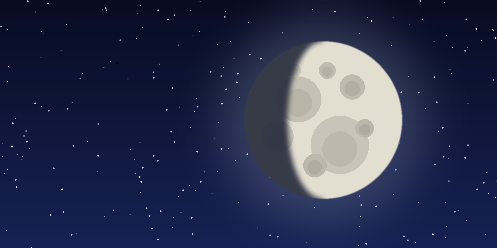

The Moon
A waxing gibbous Moon rises in the east soon after sunset. Look along the line between light and shadow, where the craters stand out most clearly.
Clear skies, an open dome, every Friday night.
The sky over Bloemfontein is clear tonight. Our volunteers have chosen three targets for the evening session. Ask at the dome for a turn at the eyepiece.

A waxing gibbous Moon rises in the east soon after sunset. Look along the line between light and shadow, where the craters stand out most clearly.
The largest planet rises in the north-east at about 21:00. Even a small telescope shows its cloud bands and up to four of its moons.
Below the three stars of Orion's belt lies a cloud where new stars are forming. Through the large telescope it glows a soft green-grey.